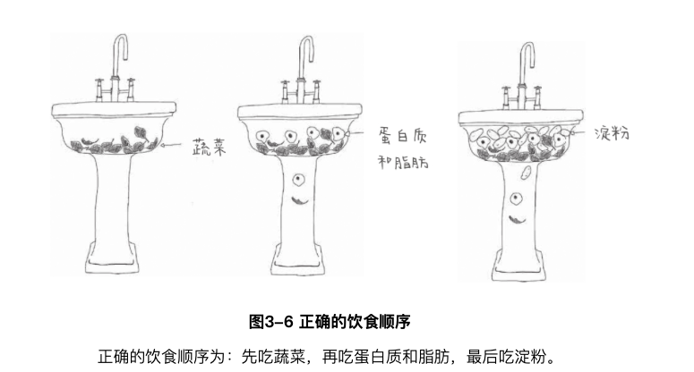
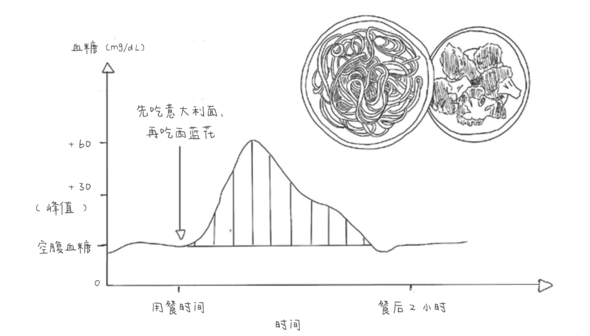
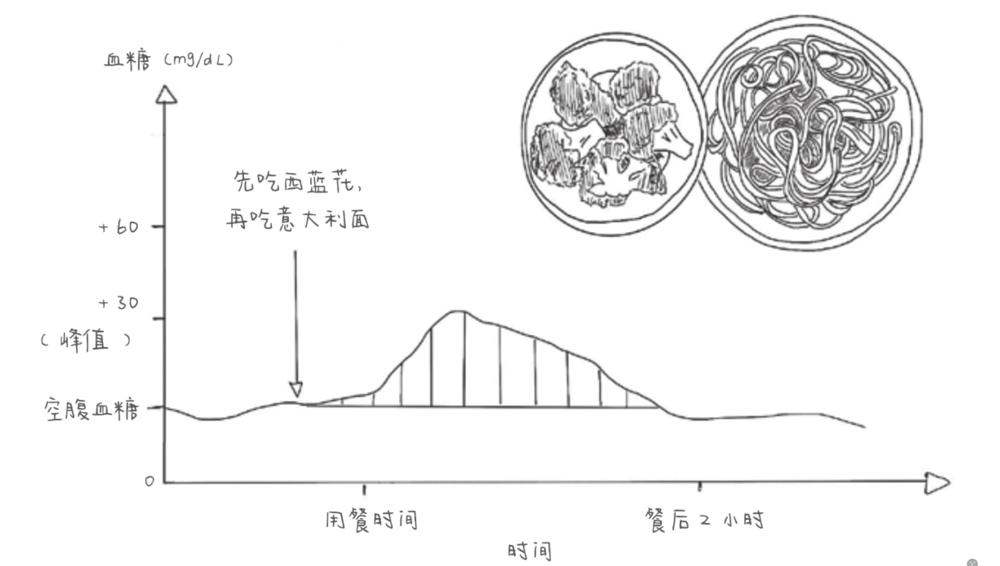
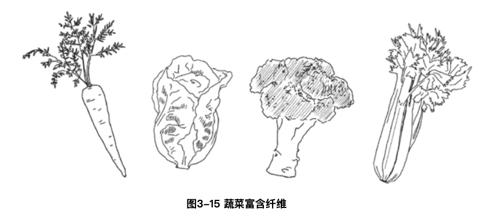
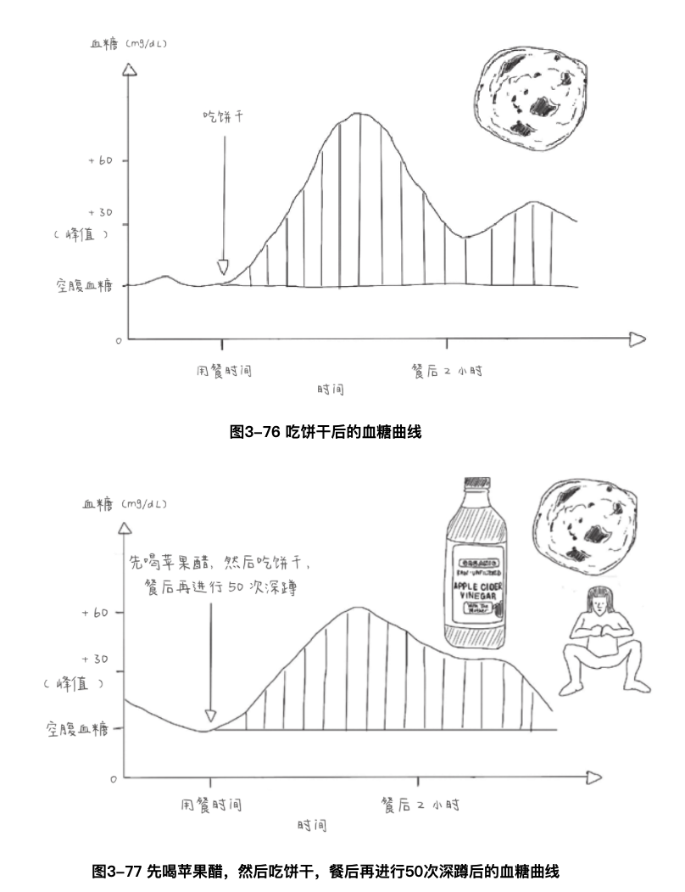

如果按照一定顺序来食用含有淀粉、纤维、糖、蛋白质和脂肪的食物，那么你不仅可以使自己的整体葡萄糖峰值下降73%，还可以使自己的胰岛素峰值下降48%。而且，不管你是否患有糖尿病，结果都是如此。

那么，正确的饮食顺序是什么呢? 那就是，先吃纤维，然后吃蛋白质和脂肪，最后吃淀粉和糖类。研究人员发现，按该顺序进食产生的效果与降糖药物的治疗效果相当。
西蓝花是一种蔬菜，含有丰富的纤维。我们知道，纤维不会被我们的消化系统分解为葡萄糖。纤维从胃进入小肠，再到被排出，过程十分缓慢，而且形态不变。但是，纤维的好处还不仅仅是这些，它还拥有三种超能力:
1、纤维会减弱α-淀粉酶的作用，这种酶能够将淀粉分解成葡萄糖分子，
2、纤维能够减缓胃的排空速度: 当有纤维存在时，食物从胃进入小肠的速度会更慢。
3、纤维会在小肠内创造一个黏性的网状结构，而这种网状结构会使葡萄糖进入血液的速度变慢
通过这种机制，纤维可以减缓任何在其之后进入消化系统的食物被分解和吸收的速度，使我们的血糖曲线平稳化


更重要的是，若我们按照正确的饮食顺序进餐，我们的胰腺产生的胰岛素就会更少。就像我在第二部分中讲到的那样，胰岛素减少有助于我们快速进入脂肪燃烧模式，从而产生很多的积极效果，其中就包括体重减轻。
注意水果是被归到糖类的，尽管水果中含有纤维，但其主要成分是葡萄糖、果糖和蔗糖，也就是糖，因此应该最后吃水果。
在阅读本章标题时，你可能会想: 这和上一个窍门是一样的，都是先吃蔬菜。但这其实是另一回事--在你开始吃饭前增加一道菜。这样一来，你会比原来吃得更多，可在此过程中，你的血糖曲线会变得平稳。

“豆类、绿叶蔬菜和水果是纤维的主要来源。我们需要多吃这类食物，它们可以维持我们的血糖曲线平稳。”
我们可以选择任何一种蔬菜作为开胃菜，包括胡萝卜等非绿色蔬菜。我们也可以在蔬菜中添加一些豆类食品，如鹰嘴豆泥或小扁豆等，它们也富含纤维。
1、吃完开胃菜之后可以马上吃主菜，最多间隔不要超过3小时
2、首先，吃蔬菜比不吃蔬菜要好；其次，蔬菜吃得越多，对身体越好。对于食用量一般可以选择做到食用和淀粉一样多的蔬菜。
3、任何蔬菜都可以，选择标准是高纤维低升糖指数。另外，这些蔬菜既可以生吃也可以煮熟之后吃。
4、请不要榨成汁或者捣成泥，这样会导致纤维流失（榨成果汁），或者使纤维被捣得过碎（捣成泥）。
5、这里的开胃菜可以选择油醋汁(橄榄油+醋)沙拉
这种方式不仅对控糖有作用，对减肥也有奇效。
若想知道一种食物对身体有什么影响，你要研究的是食物中有哪些分子，而不是热量。
100 cal的果糖、100 cal的葡萄糖、100 cal的蛋白质和100 cal的脂肪在燃烧时会释放相同的热量，但它们对我们身体的影响却截然不同。因为这些物质的分子是不同的。
与摄入的热量较少但是葡萄糖峰值飙升的人相比，那些摄入的热量较多但是血糖曲线平稳的人可以减掉更多的体重。
健康和减肥主要取决于我们的身体所吸收的物质种类，而不是我们所食用的食物热量。
事实上，只要专注于使血糖曲线平稳，即使完全不考虑热量，也可以减肥。但是要记住，这需要我们有一些基本的、良好的判断力，如果一天吃了10000 cal的黄油，我们的血糖曲线仍然会是平稳的，但是同时我们的体重也会增加。
来自控糖女神社区的会员的反馈是非常具有普遍性的：如果他们注意不使自己的血糖水平飙升，他们就可以一直吃到饱为止而无须计算热量，同时体重还会减轻。
患者的葡萄糖峰值越小，他们释放的胰岛素就越少，血糖下降的幅度就越小。同时，随着胰岛素分泌量的减少，脂肪储备开始燃烧，为身体及时提供所需能量。
一顿使血糖水平飙升的早餐会使一天中的血糖水平很难都得到控制，所以午餐和晚餐也会带来很高的葡萄糖峰值。一顿可以使血糖曲线平稳的早餐，也可以使午餐和晚餐后的血糖水平更加稳定。
早餐最不适合吃糖类和淀粉类食物
糖的本质——糖就是糖。不管它是来自玉米还是甜菜，像食用糖那样被制成结晶的白色粉末；还是来自橙子，像果汁那样被制成液体，它都是糖。不管糖来自哪种植物，葡萄糖和果糖对我们产生的影响毫无差别。
事实上，如果我们准备吃一些糖，一个完整的水果是最好的选择。首先，在整个水果中，糖的含量很少。我们也很难一口气吃下3个苹果或者3根香蕉，而这可能就是水果奶昔中水果的含量。即使我们确实吃了3个苹果或者3根香蕉，所花时间比我们喝水果奶昔的时间要长得多。所以，葡萄糖和果糖的消化速度也会慢得多。吃东西花的时间要比喝东西花的时间更长。
其次，如果吃下的是整个水果，糖往往会伴随着纤维一同出现。就像我前面讲过的那样，纤维会显著减缓摄入的任何糖类所引起的葡萄糖峰值的出现速度。
但是，把水果打碎之后，我们便将纤维粉碎成了微小的细末，纤维就不再能够行使它们的保护功能了。如果还有疑问，你就可以这么想，我们自己吃东西的时候是不会粉碎纤维的。我们的咀嚼功能很强大，但是也没有强大到堪比每秒转动400次的破壁机的金属刀片，如果把水果打碎、压榨、干燥并浓缩其中的糖分，去除水果中的纤维，就会给身体带来快速且有害的冲击--导致葡萄糖峰值的产生。
吃咸香味的早餐，代替甜味早餐
一份能够使血糖曲线平稳的理想早餐要包含大量的蛋白质、纤维、脂肪，而淀粉类食物和水果则可加可不加（最好最后吃）。
对于水果。要想使葡萄糖水平稳定，最好的选择就是浆果、柑橘类水果，或是又小又酸的苹果，因为这些水果的纤维含量高，含糖量少。不建议选择芒果、菠萝和其他热带水果，因为这些水果的含糖量最高。另外，一定要在吃水果之前先吃点儿别的东西。
不吃早餐没问题。不管你的第一餐在什么时间吃，道理都是一样的，咸香美味的饭菜是美好生活的第一步。
任何种类的糖，不管它是什么颜色、什么味道、源自何种植物，它在体内分解后仍然是葡萄糖和果糖，都会导致我们身体中出现葡萄糖和果糖峰值。
选择自己喜欢的糖。我们不需要靠吃糖活下去。我们的身体不需要果糖，只需要葡萄糖。如果我们没有吃葡萄糖，身体也可以自己生成葡萄糖，所以我们不需要通过吃糖来获取能量。记住，糖实际上会降低我们获取能量的能力。
尽量选择水果作为甜品。当我们想吃甜的东西时，最好的选择就是完整的水果。记住，大自然希望我们用这种方式来获取葡萄糖和果糖：少量地、多次地，并且和纤维一起。所以，你可以在燕麦粥里放几片苹果来代替食用糖，在酸奶中加一些浆果而不是蜂蜜。
如果你想吃一些甜食，那么最好将其作为餐后甜点，而不是在一天中空腹时吃零食。
在一大杯水中加入一汤匙醋混合而成的醋汁，在吃甜食前的几分钟先喝它，就会使随后出现的葡萄糖和果糖曲线变得平稳。通过这种方式，食欲会被抑制，同时还会燃烧更多的脂肪。
醋酸会暂时抑制α-淀粉酶的活性。因此，糖和淀粉转化为葡萄糖的速度就会变得更慢，葡萄糖对我们系统所造成的冲击也更缓和。
一旦醋酸进入血液，它会渗透到我们的肌肉中。在那里，它会刺激我们的肌肉比原来更快地制造糖原，这会使葡萄糖以更高的效率被吸收。
任何种类的醋都可以。先倒一大杯水（有些人发现热水更好），然后放1汤匙醋进去。如果你不喜欢这种味道，可以在刚开始放1茶匙醋或者再少点，然后逐渐加量。然后拿一根吸管，在吃饭前20分钟，或者吃饭过程中，或者餐后20分钟内喝完这杯醋汁。
还有一个更为简单的方法可以实践这个窍门: 在你的餐前开胃菜中加点儿醋。
我们可以吃和以前完全一样的食物，然后再通过餐后运动（在进餐后1小时10分钟内进行，每天饭后散步10～20分钟），来使这顿饭引起的血糖曲线变平稳。
饭后有氧运动（散步等）能够普遍降低葡萄糖峰值，最多可以降低27%。
饭后去健身效果会更好，尽管有些人饱腹后做高强度的运动非常困难。好消息是，在饭后70分钟内的任一时间进行锻炼，都能够有效抑制葡萄糖峰值的出现。葡萄糖水平到达峰值所需时间大概是70分钟，所以在这个时间内运动最好。
你还可以通过俯卧撑、深蹲、平板支撑或者举重等运动来锻炼肌肉。实验已经证明，抗阻运动（举重等）能够使葡萄糖峰值降低30%，并且能够使接下来24小时内的葡萄糖峰值下降35%。你很难控制葡萄糖峰值的出现，但是你可以使这个峰值变得相对较小。
餐后运动会让血糖曲线变得平稳，但胰岛素水平却不会增高，就像喝醋一样。通常，肌肉需要胰岛素来存储葡萄糖，但在收缩状态时，它无须胰岛素就能够吸收葡萄糖。
肌肉收缩的频率越高，身体就越能在不需要胰岛素的情况下消耗更多葡萄糖，葡萄糖峰值也会越低，因此胰腺分泌的用于处理剩余葡萄糖的胰岛素就会越少。这可是个好消息。只需要10分钟的餐后散步，就能够避免我们刚吃过的食物可能产生的副作用。并且，锻炼的时间越长，血糖和胰岛素曲线就会越平稳。
吃甜食却不会引起体内葡萄糖激增的神奇组合方法了：餐前喝醋汁，餐后多运动

当食用热量相当的食物时，和食用能维持血糖曲线平稳的食物的人比起来，那些食用了会导致很高的葡萄糖峰值的人的情绪会随着时间的推移变得更差，他们也会出现更多的抑郁症状。
古斯塔沃从事销售工作，这个工作让他需要往返于不同的州。因此，他经常单次开车时间在6小时、8小时甚至12小时。之前，每次在加油站停靠，感觉筋疲力尽的时候，他就会吃块糖或者格兰诺拉能量棒来“补充能量”。刚回到驾驶室的时候，他觉得很有精神，这种情况大约能保持45分钟，然后他就会再次感觉精疲力竭。古斯塔沃出现这种情况的原因可能是缺乏新陈代谢灵活性：他的身体不能将自己的脂肪储备转化为能量，需要通过吃淀粉类食物或者糖类食物补充。正如我们在窍门4“平稳早餐后的血糖曲线”中讲到的那样，依据胰岛素的工作原理，糖果或者能量棒中的葡萄糖会更容易被储存起来，而不是被用作能量。所以，比起一些咸味的东西，甜的东西被消化后，我们体内用于循环的能量实际上会更少。古斯塔沃在吃了点心后会觉得很有精神。但是，这种情况不会持续很久，大概1小时后，他就会再次感觉很累，然后不得不再吃一根能量棒。
尽管这违背以往认知，但我还是要强调，如果你想补充能量，那么请跳过甜食，不要选择糖果或者能量棒，而要选择一些咸香美味的小吃。并且，也不要选择淀粉类的食物，因为淀粉也会转化为葡萄糖。
我在前文已经讲过，将淀粉和糖类与脂肪、蛋白质或者纤维结合起来。所以，为了不让碳水化合物“裸奔”(只吃碳水化合物)，给它们“穿上外衣”。“穿在碳水化合物身上的外衣”会降低葡萄糖在体内的吸收量和吸收速度。
在朋友家享用布朗尼蛋糕时，不要忘记配一杯希腊酸奶; 在商务会议休息间隙吃百吉饼时，记得搭配一些熏鲑鱼; 在咖啡店买外带午餐时，记得同时在街角沙拉店买一份配料--圣女果和一些坚果; 如果你准备做饼干，请在面糊里添加一些坚果; 如果你正在享用一份苹果奶酥，请在上面加一点奶油。
当你享用碳水化合物的时候，切记加点儿纤维、蛋白质或者脂肪，并将这种做法变成习惯。如果你做得到，先吃纤维、蛋白质或脂肪。即使是那些咸香零食，虽然它们已经对你的血糖曲线很友好了，但其中仍然可能含有碳水化合物，那么这些零食也应该穿上外衣”: 在吐司上加牛油果和奶酪，在年糕上抹坚果酱，在吃羊角包之前先吃点儿杏仁。
所有植物都含纤维，包括坚果等。它们是搭配淀粉类食物最好的选择。你甚至可以尝试纤维药片，如用车前子壳制成的药片。
蛋白质主要存在于源自动物的食品之中，如蛋、肉、鱼、奶制品和奶酪。当然，很多植物性食物也含有蛋白质，如坚果和豆类。你也可以使用蛋白粉，但是要买成分表中标明来源的蛋白粉。我一般会选择乳清或豌豆蛋白粉。你一定要确保里面没有添加甜味剂。
越饿的时候，你的胃就越空，纯碳水食物就越容易造成更大的葡萄糖峰值（这就是为什么让早餐后的血糖曲线平稳是十分必要的）。